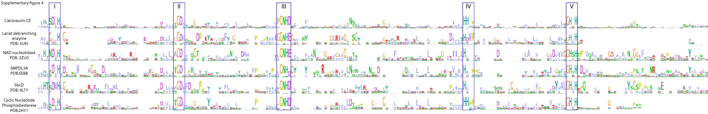

Supplementary Figure S4. Sequence Logo of multiples Calcineruin families. Sequences from various calcineurin homologues were gathered using previously characterized calcineurin PDB sequences as seeds. These sequences were aligned using the mafft local pair algorithm, and the logos representing different families were visualized using the Jalview software. Conserved motifs I-V are depicted and with boxes.